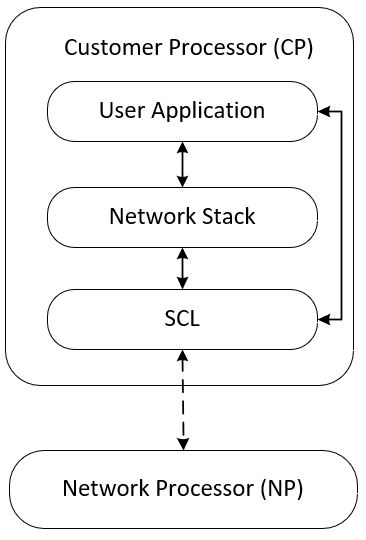

The SCL is developed to act as an interface layer between the network stack and Network Processor. It provides APIs to interact with the Network Processor. General network related operations like connecting to a network, transmitting packets and receiving packets can be performed using SCL APIs. The SCL uses Inter-Processor Communication (IPC) for communicating with the Network Processor.
Features and Functionality
The current implementation has the following features and functionality:
- Relays data to and from the Network Processor
- Buffer allocation for communicating with the Network Processor
- Wi-Fi station (STA) mode of operation
Folder Structure
- /inc/scl_common.h - contains common data types and error codes used in the SCL
- /inc/scl_ipc.h - contains APIs used by the SCL to interact with the Network Processor
- /inc/scl_types.h - contains definitions for Wi-Fi security modes
- /inc/scl_wifi_api.h - contains APIs to directly interact with the Network Processor without using any mbed-os class objects
- /src/include/scl_buffer_api.h - contains APIs to allocate and de-allocate memory
SCL Architecture

Supported Platforms
This library and its features are supported on the following Cypress platforms:
- CYSBSYSKIT-01 Rapid IoT Connect Platform RP01 Feather Kit
Dependent Libraries
Quick Start
- When using SCL library without scl-mtb-integration library, developer must initialize the SCL before starting any network activity.